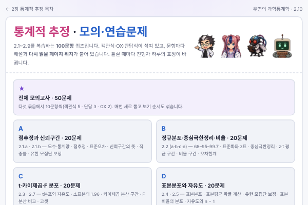

← 우연의 과학통계학 전체 목차
우연의 과학통계학
4장 통계적 추정
점추정과 구간추정, 정규·t·카이제곱·F분포, 표본분포, 자유도, 신뢰구간 사례와 모의고사
2.1.a
점추정과 신뢰구간
우연의 과학통계학 2.1.a: 추정의 뜻, 점추정과 구간추정, 표본평균의 분포, 신뢰구간과 신뢰수준, 과자 공장 사례와 정규분포 가정을 그림과 실험으로 풀어 쓴 해설
2.1.b
실습 — 표본으로 모평균 잡기
우연의 과학통계학 2.1.b 실습: 학생 400명의 중간고사 성적과 유명인 21,458명의 사망 나이를 모집단으로 보고 표본을 뽑아 95%·99% 신뢰구간을 만들고 모평균 포함 여부를 확인하는 실습
2.2
정규분포와 신뢰구간 사례
우연의 과학통계학 2.2: 정규분포의 역사와 성질, 표준화와 z분포, 중심극한정리, 혈장 알루미늄·알츠하이머·최대 근력 임상 예제, 반도체 불량률과 여론조사의 비율 신뢰구간, z표 읽기, 실습 문제 2개를 단계별 풀…
2.3
t·카이제곱·F 분포
우연의 과학통계학 2.3: 확률분포의 구분, 통계적 추론의 과정, t분포의 정의·특징·발견(고셋과 기네스), 카이제곱분포와 분산 검정, F분포와 분산 비교, R·파이썬 실습 그래프를 담은 해설
2.4
표본의 분포와 모수 추정
우연의 과학통계학 2.4: 표본분포의 뜻, 정규 모집단에서 표본평균의 평균·표준편차와 표준화, 중심극한정리, 유한모집단 수정, 전구 수명·자동차 도색 두께 예제, 모비율과 표본비율, 여학생 비율 예제를 단계별 풀이로…
2.5
표본의 크기와 자유도
우연의 과학통계학 2.5: 자유도의 뜻, 저수지 물고기·시험 점수 예로 보는 n − 1, 자유도와 표본 수의 차이, 모분산과 표본분산의 분모가 다른 이유를 실험으로 확인하는 해설
2.6
신뢰구간 추정 코드 실습
우연의 과학통계학 2.6: 중간고사 성적과 유명인 사망 나이로 95%·99% 신뢰구간을 다시 만들고, 비트코인 가격 데이터로 과거 기간의 구간이 미래 기간의 평균을 예측할 수 있는지 의견을 쓰는 복습 실습
2.7
t분포 — 맥주 효모 추정
우연의 과학통계학 2.7 실습: 고셋이 기네스 양조장에서 마주한 소표본 문제, 1.96과 t 임계값의 적중률 모의실험, 효모 시료 8병으로 t 신뢰구간 계산, 이상치와 표본 크기의 효과
2.8
의료 데이터 실습
우연의 과학통계학 2.8 실습: 15개 변수의 가상 환자 데이터 1,000명 프로필, 변수별 평균의 95% 신뢰구간, 표본 추출 실험, 성별 비교, 고혈압 비율의 신뢰구간, 데이터 이상값 점검
2.9
신뢰구간 추정 종합
우연의 과학통계학 2.9: 대학생 커피 섭취량 사례로 모분산을 알 때(z), 모를 때 대표본·소표본(t), 분산의 구간(카이제곱), 남녀 분산 비교(F)를 단계별 풀이로 정리하는 종합 실습

모의고사
통계적 추정 모의고사
2.1~2.9를 복습하는 100문항 모의·연습문제 퀴즈 (객관식·OX·단답, 타이머, 오답 리뷰)